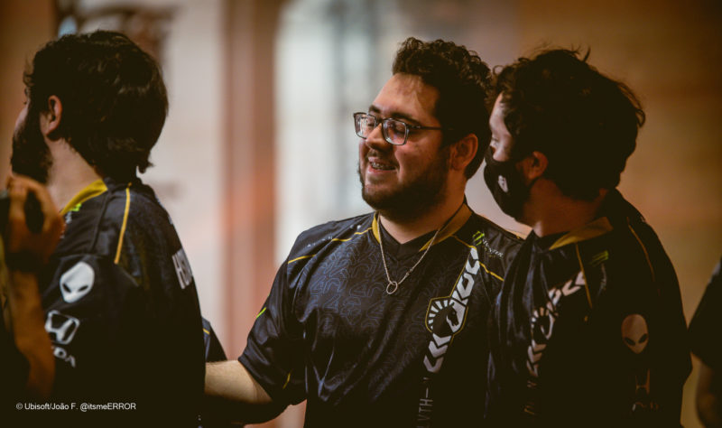

BR6 2022 3º Turno: Liquid, Black Dragons, Team oNe e FaZe vencem na estreia
Neste sábado (17) começo o terceiro turno do Brasileirão de Rainbow Six (BR6). Após os jogos da primeira rodada, a FaZe Clan, Team Liquid, Black Dragons, Team oNe e MIBR venceram na estreia e saíram na frente na tabela.
Paluh, jogador da Team Liquid que fez história no Six Invitational (Foto: João Ferreira/Ubisoft)
A rodada começou com uma vitória difícil da FaZe Clan sobre a w7m por 8-6. A Team Liquid e Team oNe venceram seus confrontos por 7-5 contra Ninjas in Pyjamas e 00 Nations, respectivamente. A Black Dragons bateu a TropiCaos por 7-4, e o MIBR derrotou a FURIA por 8-7.
A segunda rodada do terceiro turno do BR6 será disputada no próximo domingo (18). Confira os jogos da rodada:
- Team oNe x TropiCaos
- w7m x FURIA
- MiBR x Ninjas in Pyjamas
- Team Liquid x Black Dragons
- FaZe Clan x 00Nation
Equipe da FaZe Clan. Foto: Ubisoft/Kirill Bashkirov
Brasileirão de Rainbow Six (BR6)
O terceiro turno do Brasileirão de Rainbow Six (BR6) acontece entre os dias 17 de setembro e 9 de outubro. A competição conta com dez equipes: Black Dragons, FaZe Clan, Ninjas in Pyjamas, Team Liquid, TropiCaos, MIBR, Team oNe, w7m, FURIA e 00 Nation.